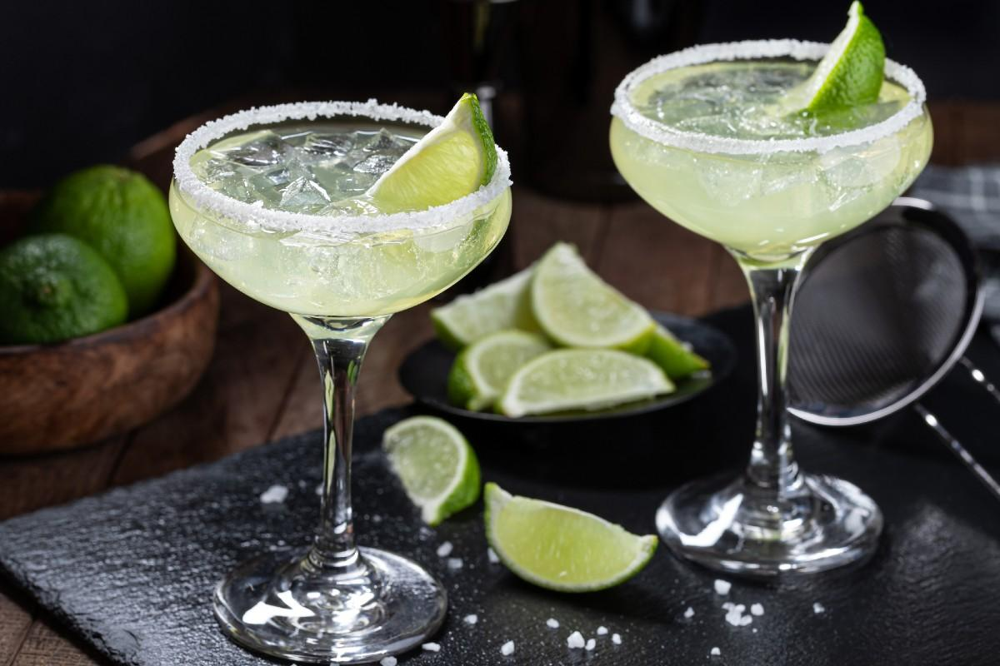

Margarita

The classic Margarita cocktail has been one of the most popular cocktails in America for years and still remains on top. While there are many variations, the traditional recipe consists of tequila, Triple Sec and lime juice. It's also often served with a salt rim for the perfect balance of sweet, sour and salty.
Ingredients
- 2 ounces tequila blanco
- 3/4 ounce orange liquor
- 1 ounce lime juice, freshly squeezed
- 1 cup ice
Garnish
- salt rim
- lime wheel
Steps
- Salt the rim of a chilled margarita glass and set aside
- Add the tequila, orange liqueur and lime juice into a blender, and top with 1 cup of ice. Blend until the mixture is smooth and frothy.
- Pour the contents of the blender into the salted Margarita glass.
- Garnish with a lime of wheel
Home